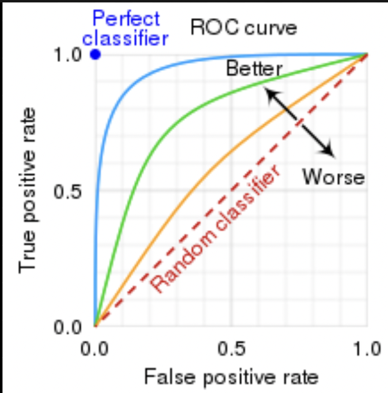
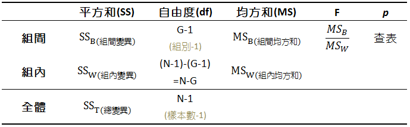
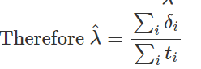
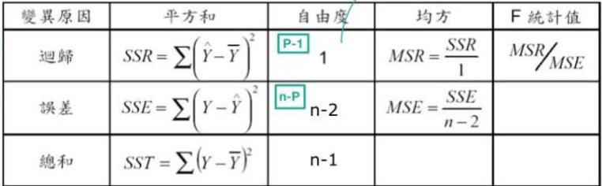
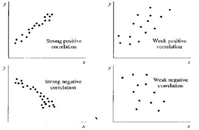
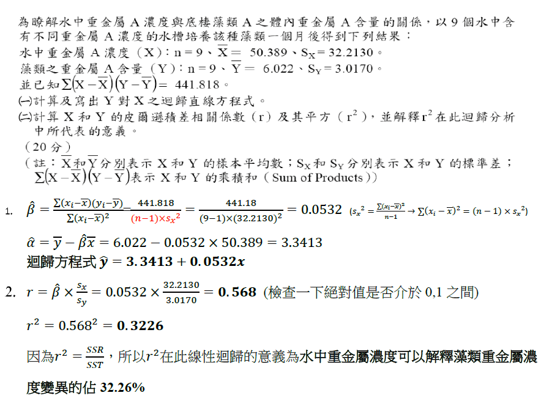
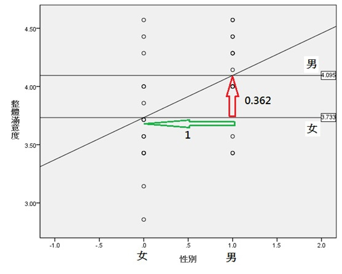

辨識
sensitivity=recall=真實PTP
specificity=真實NTN
precision=PTP
F−score=recall+precision2recall⋅precision
勝算比
odds=失敗機率成功機率
先驗勝算
篩檢前宣稱所有人都病，成功率為有病人數
oddsbefore=沒病機率有病機率=沒病人數有病人數
後驗勝算
宣稱篩檢陽性的有病，成功率即精確度(precision)
oddsbefore=1−precisionprecision＝偽陽性人數真陽性人數
Likelihood ratio
定義：
oddsafter=oddsbefore×Likelihood ratio
=oddsbefore×沒病裏面被篩出陽性的比例有病裏面被篩出陽性的比例
所以
Likelihood ratio=沒病裏面被篩出陽性的比例有病裏面被篩出陽性的比例
RoC Curve 上一點斜率

二項分布
n次中k次
f(k,n,p)=Pr(X=k)=(kn)pk(1−p)n−kE[X]=npVar[X]=np(1−p).
Beta distribution
定義在(0,1)區間的連續機率分布，有兩個母數α,β>0，即為先驗成功與失敗。把發生率p當作變數(x)，在現有數據下去預測p值是多少（即再做一次實驗），所以維護E[X]=α+βα, 變異數是二項分佈下的E[nY]，所以Var(X)=E(X−μ)2=(α+β)2(α+β+1)αβ。
f(x;α,β)=∫01uα−1(1−u)β−1duxα−1(1−x)β−1=Γ(α)Γ(β)Γ(α+β)xα−1(1−x)β−1=B(α,β)1xα−1(1−x)β−1
Note
Beta distribution 和二項分佈共軛
Poisson distribution
即做很多次(n→∞)成功率p的白努力試驗，成功次數λ=np。卜瓦松分布適合於描述單位時間內隨機事件發生的次數的機率分布。


存活率 P(X=0)
P(X=0)=exp−λ=exp−hazard×time
Gamma distribution
Poisson 的共軛，描述單位時間發生率分佈
f(x)=Γ(α)βαxα−1e−βx
E[X]=βα, Var[X]=β2α
常態分佈
連續分佈，母數 μ,σ2
f(x)=2πσ1exp(−21(σx−μ)2)
ϕ(z)=2π1exp(−2z2)Φ(z)=∫−∞zϕ(x)dx (查表用)
連續性校正
離散化要把離中間的密度分給兩邊。
Example: 逼近Bin Dist
x∼Bin, x′∼N(μ,σ2)P(x≤n)=P(x′≤n+21)
抽樣分佈
每次抽 n 個sample x1…xn取平均
E(Xˉ)=μVar(Xˉ)= n21∑Var(xi)= nσ2
Standard error
Var(Xˉ)
Hoeffding’s inequality
xi∈[a,b]P(Xˉ−μ≥t) ≤ exp(−n(a−b)22t2n2)
中央極限定理
自任何母體中隨機抽取的樣本，其樣本平均數的抽樣分配，在樣本大小足夠大時，會趨近於常態分配。
Example
每次試驗為n次伯努力( x~Bin(1,π) )，成功率μ
Var(xˉ)=nπ(1−π)
成功率 (95%區間)
μ+1.96nπ(1−π)
假說檢定
假設H0為真，計算實驗結果出現率
Type1 error : H0 對的但被拒絕 (95%以外的情況)
Type2 error : H0 錯的但沒被拒絕

統計檢定力
假設 H1正確，H1中真的拒絕H0的比例 (1-β,紅色)

樣本數估計
C=μ0+Zαnσ(Critical value)
Z1−β=(C−μ1)/(nσ)(統計檢定力)
⇒n=[σ−1(μ0−μ1)Z1−α+Z1−β]2=[Effect sizeZ1−α+Z1−β]2

Z test
已知變異數 σ2，欲驗證差異 d。問達到檢定力 1-β，顯著水準 α需多少樣本 n?
n=[σ−1dZ1−α+Z1−β]2
Z test
- 母體σ已知，驗證母體平均為μ的機率
- 服從 Normal distribution
假說檢定
H0: x∼N(μ,σ2)
對於n個次試驗 xi，
⇒ Var(xˉ)=n2nσ2Z−value=σxˉxˉ−μ=σ/nxˉ−μ∼N(1,0)
T test
t-distribution
- 描述樣本的分佈
- 母數為自由度，從下方逼近常態分布(n 小則爛)
n 個 sample xi(自由度為n-1，因為用平均值正規化)
S2=n−1∑(xi−xˉ)2
假說檢定
H0: x∼N(μ,σ2)
對於n個次試驗 xi，
⇒ Var(xˉ)=n2nσ2σxˉxˉ−μ=σ/nxˉ−μ∼N(1,0)
母群σ2未知 → 用樣本變異數 S2
sample t-value= S/自由度xˉ−μ∼T(自由度)
Tip
二項、Poisson 變異數不是母數，只需要Z test
χ test
χ²-distribution
Define
k個隨機變數 Zi 是相互獨立、且
Zi∼N(0,1)
X=∑Zi2
則
X∼χ2(k)
Property
E(X)=kVar(X)=2k
假說檢定
對於變數 x，n個樣本 xi，H0: σ2 = S2
則
σxi−xˉ∼N(0,1)
所以
σ2(n−1)S2=i=1∑k(σxi−xˉ)2∼χ2(n−1)
根據 σ2(n−1)S2 對應到的累積機率就有p值 (H0成立機率)
Two sample independent T-test
Y1,Y2平均μ1,μ2，且independent ,cov(Y1,Y2)=0
H0: μ1=μ2
假設Y1,Y2都來自變異數為σ的母體
把 Y1,Y2 放在一池 Yp
σ2=sp2=Var(n1+n2−2(n1−1)S12+(n2−1)S22)
=n1+n2−2(n1−1)S12+n1+n2−2(n2−1)S22
考慮隨機變數μ1-μ2 服從常態分佈
E[μ1−μ2]=0
σμ1−μ22=σμ12+σμ22=σ12n1−1+σ22n2−1=sp2(n1−1+n2−1)
所以
T value=Spn1−1+n2−1μ1−μ2

F 分佈
比較亮個樣本的S
S12∼自由度卡方分佈
f−value=S2S1
ANOVA
處理多重比較Type I error
k 組 定義 yi,j 第i組第j個值
SST=====i,j∑(yij−yˉˉ)2i,j∑(yij−yiˉ+yiˉ−yˉˉ)2i,j∑(yij−yiˉ)2+i,j∑(yiˉ−yiˉˉ)2+i∑(yiˉ−yˉˉ)(j∑yij−yiˉ)i,j∑(yij−yiˉ)2+i,j∑(yiˉ−yiˉˉ)2SSW+SSB
檢定 SSB(df=k-1) , SSW(df=n-k) (單尾)
MSB=SSB/k−1MSW=SSW/n−k
F值=MSWMSB

>t^2^=F~1,n~
RCT
隨機分派
單變因，A組, B組則
H0: PA=PB=PA+B
yA∼Bin(nA,PA)
Pearson’s chi-squared test
當nA夠大，A,B獨立
Z(yA)=nAPA(1−PA)yA−nAPA
設PA+QA=1,wA=(nA−yA)
Z(yA)2=nAPA(yA−nAPA)2+nAQA(yA−nAPA)2=nAPA(yA−nAPA)2+nAQA(wA−nAQA)2
Z(yA)∼N⇒Z(yA)2∼χ(1)2
若R × C表格 ，自由度 df=(R-1)× (C-1)
∑Ei,j(Oi,j−Ei,j)2df∑Z(yi)2∼χ(df)2
H0為真，Pi=Pj
Fisher exact test
A,B獨立，有一格小於5，視為無母數，從樣本空間中抽出n相異成員
H0: PA=PB
已知樣本空間 n=nA+nB人中y=yA+yB個✓，那麼隨機抽nA人，yA個✓機率
P(yA)=(yAn)(yAy)(nA−yAn−y)=n!yA!yB!(nA−yA)!(nB−yB)!y!(n−y)!nA!nB!
p−value=P(y)≤P(yA)∑P(y)
McNemar
A,B樣本相依，無母數，檢驗A,B一致？
H0: PA=PB ⇒ a+c=a+b, b=c
Let b+c=nD, by H0,P(B∣nD)=1/2
thus, b∼Bin(nD,1/2)
⇒z2=4nD(b−2nD)2∼χ(1)2P−value=b′不比b正常∑Bin(nD,0.5)(x=b′)
Kappa
A,B樣本相依，檢驗A,B一致？
n 個樣本
PE=(TATB+FAFB)n−2,P(A=B)=na+d
κ=1−PEP(A=B)−PE
Survival Analysis
觀測生存時間 T ，存活率函數
S(t)=P(T>t)
pdf:
f(t)=δ→0limδP(T∈[t,t+δ))=−dtdS(t)
風險(活著的人出事機率)
h(t)=δ→0limδP(T∈[t,t+δ)∣T>t)=S(t)f(t)=−dtdlog[S(t)]
Log-rank test
無母數檢定統計量 χ2(k-1)
S(t)=i≤t∏第i月存活率
每一個出事的存活死亡算Pearson’s chi-squared test
Exponential function
假設 T~Exp(λ), h(t)=λ
S(t)=exp(−λt)
f(t)=λexp(−λt)

回歸
無法RCT的情況
線性回歸
Out come y is cont.
對於數據 xi,yi
假設∀ x, y~N (μ(x),σ(x)2 )
y^=E(y∣x)=α^+β^x
求α^,β^使得 d=∑i(yi−y^)2最小
即
⎩⎨⎧00=δα^δdi∑(yi−α^−β^xi)2=i∑2(α^+β^xi−yi)=2n(α^−(yˉ−β^xˉ))=δβ^δdi∑(yi−α^−β^xi)2=i∑2(xi2β^−(yi−α^)xi)=2(β^i∑xi2−i∑yixi+α^i∑xi)
⇒⎩⎨⎧α^β^=yˉ−β^xˉ=∑ixi2∑ixiyi−α^∑ixi
⇒⎩⎨⎧α^β^=yˉ−β^xˉ=xˉ2−x2ˉxˉyˉ−xyˉ=∑(xi−xˉ)2∑(xi−xˉ)(yi−yˉ)
所以
yi^=α^+β^xi=yˉ+β^(xi−xˉ)
誤差
對於所有yi與零假設模型(yi=yˉ)誤差SST能被拆成:
- 所有yi和回歸模型的誤差，即yi和yi^的誤差 SSE
- 線性回歸和零假設模型的誤差，即yi^和yˉ的誤差 SSR
因為
SST=∑(yi−yˉ)2=∑[(yi−yi^)+(yi^−yˉ)]2=SSE+SSR+∑(yi−yi^)(yi^−yˉ)
其中
∑(y^i−yˉ)(yi−y^)⇒SST=∑(yˉ+β^(xi−xˉ)−yˉ)(yi−yˉ−β^(xi−xˉ))=∑β^(xi−xˉ)[yi−yˉ−β^(xi−xˉ)]=β^[∑(xi−xˉ)(yi−yˉ)−β^∑(xi−xˉ)2]=0=SSE+SSR
ANOVA table
比較兩個假說
H0:y=yˉ, H1:y=yˉ+β^(xi−xˉ)
所以組間是 SSR，組內 SSE
因為
SSR=∑(yi^−yˉ)2=β^2已知∑(xi−xˉ)2
且β^∼N(0,σ2)，所以 常數SSR∼χ12

F值對到的 p-value 就是H0與H1沒差的機率
相關係數
|r|越大越相關
r=∑(xi−xˉ)2⋅∑(yi−yˉ)2∑(xi−xˉ)(yi−yˉ)
- 根據柯西不等式，1≥r≥−1
- 相關係數、迴歸係數同號
- r=β×SySx
- 決定係數: R2=SSTSSR
- x,y 互換不影響 R2


Two sample t-test?
FSince r2=SSTSSR=SSE/(n−2)SSR/1=(n−2)SSyβ^2SSx=(n−2)Sβ^

Logistic Regression
對於二元變量 y
logit(P(y=1))=log(odds)
回歸:
logit(P)=α^+β^x
當 x 為二元變數
log(OR)=log(odds(x=0)odds(x=1))=β^
β^ 會常態分布，所以給定 Se(β^) ，就能算 β^ 信賴區間
假說檢定
檢定 OR 跟 1的差別
所以
tvalue=Se(OR)log(OR)−log(1)=Se(β^)β^
當 x 為連續變數
危險性
OR=odds(x=n)odds(x=n+1)=exp(β^)
Poisson regresion
link function: g(μ)=log(λ)
- 適合用在應變為R+
- 應用在發生人數時，因為 η=λ×PY，回歸時加入 log(PY) 校正